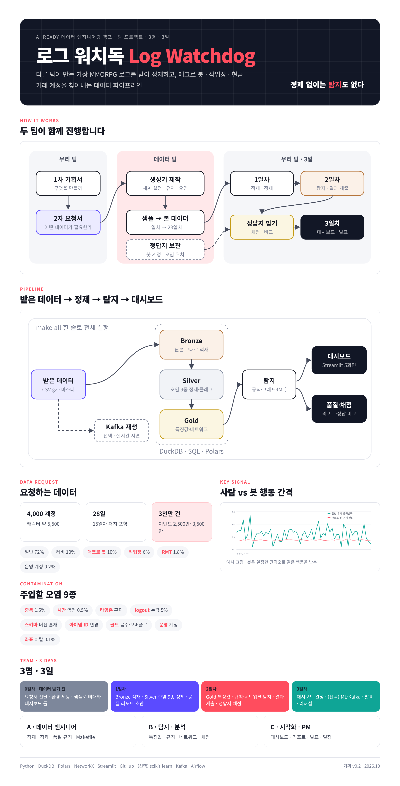

문서 안내
이 사이트는 네 개 문서로 이루어져 있습니다. 1차는 우리 팀이, 2차는 데이터를 만들어 줄 팀이 주로 읽습니다.
1차 · 우리 팀용
팀 기획서
받은 데이터로 3일 안에 만드는 것. 구조, 기술 스택, 업무 방식, 3인 업무 분담, 일정, 위험 대응.
읽기 →2차 · 데이터 팀용
데이터 요청서
필요한 테이블과 스키마, 데이터 양, 유저 구성, 오염 주입 명세, 정답지, 전달 형식, 검수 기준.
읽기 →별첨 A
실제 데이터 출처와 기업 공개 대회
엔씨소프트 블소 · 리니지 · 아이온 데이터, 게임사가 직접 낸 대회, 지금 구할 수 있는 실제 데이터.
읽기 →별첨 B
출처별 원문 번역 정리
18개 출처의 내용을 원문 구조대로 옮긴 번역 정리와 우리 프로젝트에 주는 시사점.
읽기 →진행 방식
한 장 요약
